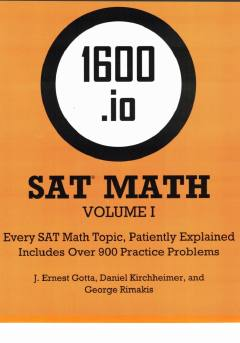

1SSAT matematika fanidan batafsil tushuntirishlar va ko'plab amaliy mashqlar to'plami.
Ushbu kitob SAT imtihonining matematika qismi uchun mo'ljallangan bo'lib, har bir mavzuni batafsil tushuntiradi va 900 dan ortiq amaliy mashqlarni o'z ichiga oladi. Mualliflar murakkab matematik tushunchalarni sodda va tushunarli tarzda bayon etgan. Qo'llanma test sinovlariga puxta tayyorgarlik ko'rishni istagan o'quvchilar uchun foydali manbadir.